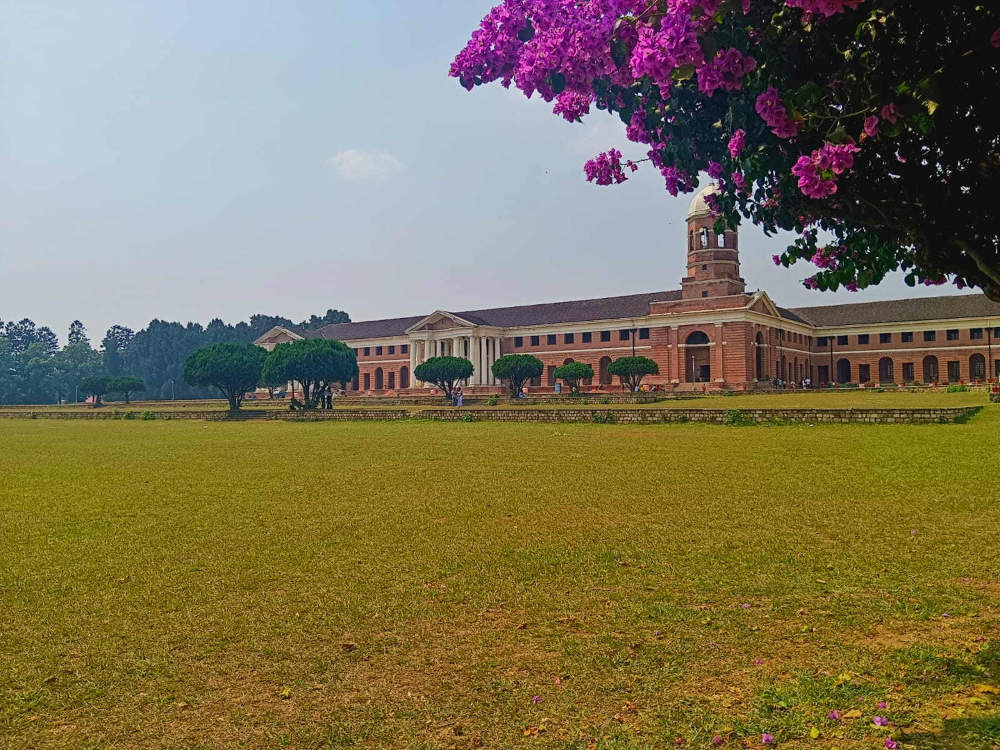
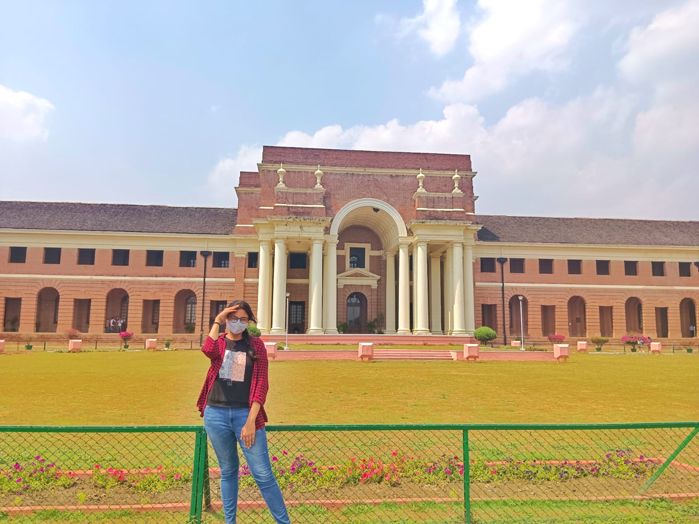

Forest Research Institure

The Forest Research Institute is an institute of the Indian Council of Forestry Research and Education and is a premier institution in the field of forestry research in India. It is located at Dehradun in Uttarakhand, and is one of the oldest institutions of its kind. In 1991, it was declared a deemed university by the University Grants Commission. Established as Imperial Forest Research Institute in 1906, Forest Research Institute (FRI) Dehradun is a premier institution under the Indian Council of Forestry Research and Education (ICFRE).
